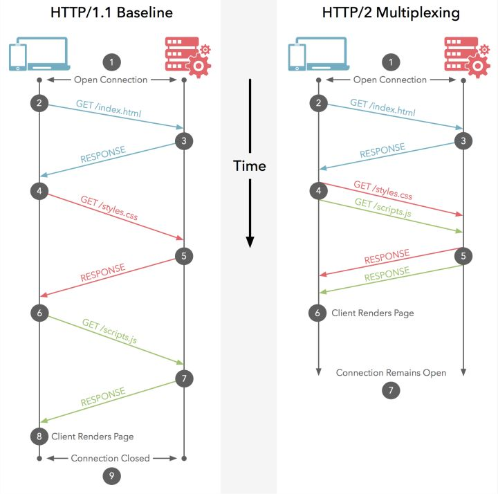

主要特征
简单快速
客户向服务器请求服务时，只需传送请求方法和路径。请求方法常用的有GET、HEAD、POST。每种方法规定了客户与服务器联系的类型不同。由于HTTP协议简单，使得HTTP服务器的程序规模小，因而通信速度很快。
灵活
HTTP允许传输任意类型的数据对象。正在传输的类型由Content-Type加以标记。
无状态
HTTP协议是无状态协议。无状态是指协议对于事务处理没有记忆能力。缺少状态意味着如果后续处理需要前面的信息，则它必须重传，这样可能导致每次连接传送的数据量增大。另一方面，在服务器不需要先前信息时它的应答就较快。
支持短连接
HTTP1.0每次连接只处理一个请求。服务器处理完客户的请求，并收到客户的应答后，即断开连接。采用这种方式可以节省传输时间和网络空间。HTTP1.1以后默认为长连接。
支持模式
B/S与C/S模式都可以实现。且HTTP没有要求必须基于TCP/IP协议之上，它可以基于任何其他协议栈之上。
状态码
状态码分类
- 1xx：指示信息–表示请求已接收，继续处理；
- 2xx：成功–表示请求已被成功接收、理解、接受；
- 3xx：重定向–要完成请求必须进行更进一步的操作；
- 4xx：客户端错误–请求有语法错误或请求无法实现；
- 5xx：服务器端错误–服务器未能实现合法的请求。
常见状态码
1 | 100 Continue //继续。客户端应继续其请求 |
URI
统一资源标识符（Uniform Resource Identifier | URI）是一个用于标识某一互联网资源名称的字符串。它包含了URL和URN两个子集。
URL
统一资源定位符（Uniform Resource Locator | URL）是由蒂姆·伯纳斯·李发明用来作为万维网的地址。现在它已经被万维网联盟编制为互联网标准RFC1738。
- 结构：
1
protocol :// hostname[:port] / path / [;parameters][?query]#fragment //其中[]内为可选项
- 绝对定位：
1
2protocol :// hostname[:port] / path / [;parameters][?query]#fragment //完整的根结构
/path / [;parameters][?query]#fragment //以'/'开头表示根结点 - 相对定位：
1
2./ path / [;parameters][?query]#fragment //'./'表示当所在位置，可省略
../path / [;parameters][?query]#fragment //'../'表示上级目录
URN
统一资源名称 (Uniform Resource Name | URN)是URI两种形式之一。它能唯一标识一个实体的标识符，但是不能给出实体的位置。可以理解之为资源的唯一标识。
请求消息
- 请求格式
HTTP请求由请求行（request line）、请求头部（header）、空行和请求数据四个部分组成。

- 请求行
用来说明请求类型,要访问的资源以及所使用的HTTP版本。 - 请求头部
说明服务器要使用的附加信息。如主机地址HOST，客户端定义的代理信息User-Agent等辅助信息。
| 属性 | 属性值 | 作用 |
|---|---|---|
| Accept | MIME类型（text/html） | 请求接受响应数据类型 |
| Accept-Encoding | 编码格式 | 浏览器支持的编码格式 |
| Cookie | 交互信息（jsessionid=123） | 本地存储交互所需信息 |
| Host | host url | 指定被请求资源的Internet主机和端口号 |
| Referer | url | 表示这个请求是从哪个URL过来的 |
| Cache-Control | no-cache（依据服务响应处理）、no-store、public（所有内容都将被缓存）、private（内容只缓存到私有缓存中）… | 指定请求和响应遵循的缓存机制 |
| Date | 时间 | 表示消息发送的时间 |
| User-Agent | 用户代理标识 | 标识客户端的运行环境 |
| Orign | url | 仅POST所有，类似Referer，用于检测数据来源，解决跨域问题。但不同于Referer，不涉及用户隐私 |
| Connection | close/keepalive | 是否开启长连接 |
| Keep-Alive | 300 | 开启长连接时的连接时长（秒） |
| If-Modified-Since | 本地数据上一次修改时间 | 询问服务器数据是否变动 |
| Access-Control-Request-Method | POST,GET,OPTIONS,DELETE | 预检测实际使用请求方法 |
| Access-Control-Request-Headers | X-PINGOTHER, Content-Type… | 预检测实际使用请求头属性 |
- 样例
1
2
3
4
5
6
7
8POST / HTTP1.1 //请求行
Host:huangyufeng.com //请求头部begin
User-Agent:Mozilla/4.0 (compatible; MSIE 6.0; Windows NT 5.1; SV1; .NET CLR 2.0.50727; .NET CLR 3.0.04506.648; .NET CLR 3.5.21022)
Content-Type:application/x-www-form-urlencoded
Content-Length:40
Connection: Keep-Alive //请求头部end
//空行
name=Professional%20Ajax&publisher=Wiley //数据
返回消息
- 消息格式
HTTP响应由：状态行、消息报头、空行和响应正文组成。 - 状态行
包含HTTP版本号及响应状态码。 - 消息报头
包含响应的信息和数据类型等内容。
| 属性 | 属性值 | 作用 |
|---|---|---|
| Date | 时间 | 消息发送时间 |
| Server | 服务器信息 | 提供服务器信息 |
| Content-type | MIME类型（text/plain） | 响应内容数据类型 |
| Content-Encoding | 编码格式 | 内容编码格式（未编码压缩过的数据不可携带） |
| Last-Modified | 时间 | 服务端数据最后修改时间 |
| Expires | 时间 | 客户端缓存过期时间 |
| Cache-Control | no-cache（依据服务响应处理）、no-store、public（所有内容都将被缓存）、private（内容只缓存到私有缓存中）… | 指定请求和响应遵循的缓存机制 |
| Set-Cookie | cookie信息 | 覆盖浏览器中的cookie信息 |
| Access-Control-Allow-Origin | *、URL | 允许跨域访问的请求源头 |
| Access-Control-Allow-Methods | POST,GET,OPTIONS,DELETE | 允许跨域访问的方法 |
| Access-Control-Allow-Headers | header属性 | 允许附加的属性类型 |
- 样例
1
2
3
4
5
6
7
8
9
10HTTP/1.1 200 OK //状态行
Date: Fri, 22 May 2009 06:07:21 GMT //消息报头begin
Content-Type: text/html; charset=UTF-8 //消息报头end
//空行
<html> //正文begin
<head></head>
<body>
//................
</body>
</html> //正文end
Get与Post
区别
- GET在浏览器回退时是无害的，而POST会再次提交请求；
- GET产生的URL地址可以被Bookmark，而POST不可以；
- GET请求会被浏览器主动cache，而POST不会，除非手动设置；
- GET请求的参数会完整的被保存在历史记录里，POST不会；
- GET请求参数放在URL中，POST放在request body中；
- GET请求只能进行url编码，POST请求支持多种编码方式；
- 对于参数类型，GET只接受ASCII字符，而POST没有限制；
- GET请求在URL中传递的参数是有长度限制的，而POST没有；
- GET比POST更不安全，因为参数直接暴露在URL中，所以不能传递敏感信息；
Get请求可以通过body携带数据吗？
事实上，所有HTTP请求的本质都是一个TCP数据包而已，只是在应用层中规定了如何使用TCP打包数据而已，TCP数据包本身是没有区别的。因此，Get请求同样可以在body中添加数据，不过许多服务器会忽略Get请求的body部分。此外，有的浏览器在发送POST请求时，会将POST的header部分与body部分分成两个TCP包发送，当第一个数据包发送成功收到ACK后再发送第二个数据包。
HTTP1.0，1.1，2.0
HTTP1.0与HTTP1.1的区别
- 长连接、短连接
HTTP 1.0需要使用keep-alive参数来告知服务器端要建立一个长连接，而HTTP1.1默认支持长连接。 - 宽带消耗
HTTP 1.1支持只发送header信息(不带任何body信息)，如果服务器认为客户端有权限请求服务器，则返回100，否则返回401。客户端如果接受到100，才开始把请求body发送到服务器。另外HTTP还支持传送内容的一部分。这样当客户端已经有一部分的资源后，只需要跟服务器请求另外的部分资源即可。这是支持文件断点续传的基础。 - HOST域
HTTP1.0是没有host域的，HTTP1.1才支持这个参数。 - 请求方法
HTTP1.0定义了三种请求方法： GET, POST 和 HEAD方法。
HTTP1.1新增了五种请求方法：OPTIONS, PUT, DELETE, TRACE 和 CONNECT 方法。1
2
3
4
5
6
7
8GET //请求指定的页面信息，并返回实体主体。
HEAD //类似于get请求，只不过返回的响应中没有具体的内容，用于获取报头
POST //向指定资源提交数据进行处理请求（例如提交表单或者上传文件）。数据被包含在请求体中。POST请求可能会导致新的资源的建立和/或已有资源的修改。
PUT //从客户端向服务器传送的数据取代指定的文档的内容。
DELETE //请求服务器删除指定的页面。
CONNECT //HTTP/1.1协议中预留给能够将连接改为管道方式的代理服务器。
OPTIONS //允许客户端查看服务器的性能。
TRACE //回显服务器收到的请求，主要用于测试或诊断。
HTTP2.0
- 多路复用

HTTP2.0使用了多路复用的技术，做到同一个连接并发处理多个请求。当然HTTP1.1也可以多建立几个TCP连接，来支持处理更多并发的请求，但是创建TCP连接本身也是有开销的。 - 数据压缩
HTTP1.1不支持header数据的压缩，HTTP2.0使用HPACK算法对header的数据进行压缩，这样数据体积小了，在网络上传输就会更快。 - 服务器推送
当我们对支持HTTP2.0的web server请求数据的时候，服务器会顺便把一些客户端需要的资源一起推送到客户端，免得客户端再次创建连接发送请求到服务器端获取。这种方式非常合适加载静态资源。
HTTPS
为了数据传输的安全，HTTPS在HTTP的基础上加入了SSL协议，SSL依靠证书来验证服务器的身份，并为浏览器和服务器之间的通信加密。
HTTPS与HTTP的区别
- HTTPS协议需要到CA申请证书，一般免费证书很少，需要交费。
- HTTP是超文本传输协议，信息是明文传输，HTTPS则是具有安全性的ssl加密传输协议。
- HTTP和HTTPS使用的是完全不同的连接方式，用的端口也不一样，前者是80，后者是443。（值得一提的是，443端口被谷歌用来作为它们制定的新协议QUIC，而不是基于TCP。这一协议同样服务于HTTPS。）
- HTTP的连接很简单，是无状态的；HTTPS协议是由SSL+HTTP协议构建的可进行加密传输、身份认证的网络协议，比HTTP协议安全。
参考
《关于HTTP协议，一篇就够了》
《HTTP/2.0 相比1.0有哪些重大改进？》
《HTTP1.0 HTTP 1.1 HTTP 2.0主要区别》